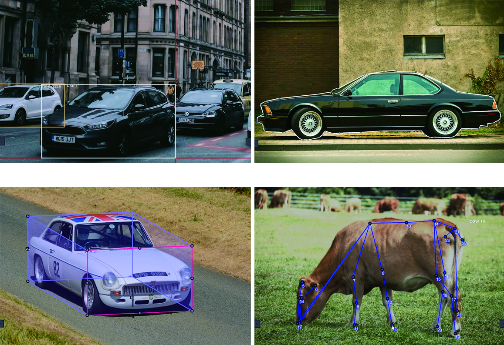
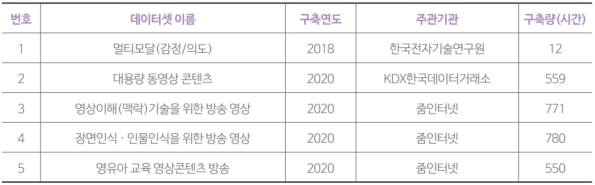
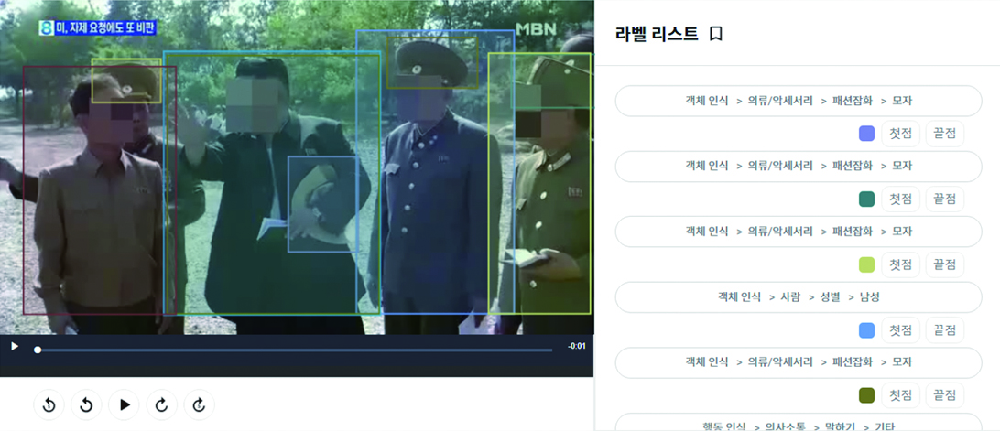
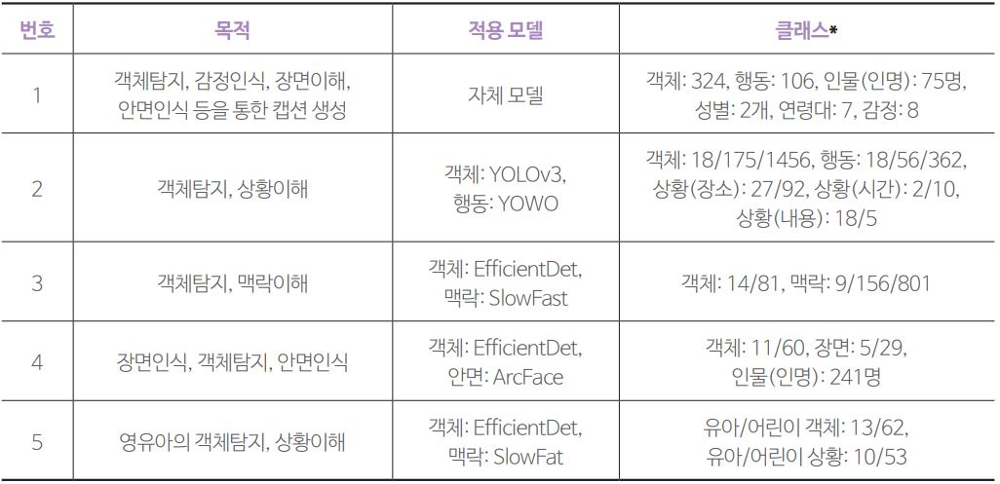

Artificial Intelligence

AI국내 방송 동영상 기반
AI 학습데이터 구축 사례: AI 허브를 중심으로
박대민
(선문대학교 미디어커뮤니케이션학부 조교수)
-
딥러닝의 발전에 따라 향후 방송 제작 전 과정에서 인공지능(AI)의 활용도가 매우 높을 것으로 기대된다. 이에 따라 국내 방송 분야에 특화된 AI 학습데이터 구축이 요청된다. 이 글에서는 한국지능정보사회진흥원의 AI 허브에서 공개한 방송 동영상 기반 AI 학습데이터 중 객체 탐지, 행동 인식, 상황 이해 등 주요 과업과 관련된 5 종의 데이터셋과 이를 활용할 수 있는 최신 모델을 소개한다. 국내 방송사들은 2018년도부터 시작된 AI 학습데이터 구축 사업에 다양하게 참여함으로써 AI 기반 서비스 개발을 위한 경험을 축적하고 있다. 이를 살려 향후 방송사의 AI 전환이 가속화되기를 기대해본다.
-
1들어가며방송 분야는 국내 시장 규모만 2020년 기준 56.3조원에 달할 정도로 미디어 분야에서 가장 큰 부가가치를 창출하고 있다１. 특히 요약, 자막 달기, 영상 생성, 자동 태깅, 분류, 검색 등 방송 제작, 편집, 유통 등 전 과정의 과업이 딥러닝의 과업과 일치해 향후 방송 분야에서 인공지능의 활용도가 매우 높을 것으로 전망된다. 그러나 현재 현업에서 방송 분야의 인공지능 전환(AI transformation)은 몹시 더딘 상황이다.
이는 기술적으로 방송의 특성에 최적화된 학습데이터가 요청됨에도 불구하고 방송 동영상 기반 학습데이터가 부족한 탓이 크다. 2022년 9월 현재, AI 연구 포털 페이퍼스위드코드닷컴２에는 동영상 관련 벤치마크 데이터셋으로 648종이 공개되어 있다. 그러나 이중 ‘broadcasting’이나 ‘television’으로 검색했을 때 나오는 학습셋은 각각 7종과 13종에 불과하며 그나마도 연구 논문 수로 볼 때 활용도가 높지 않다.
물론 방송 동영상을 분석하는 모델을 기존의 동영상 학습데이터를 활용해 개발할 수도 있다. 그러나 방송 동영상 기반 학습데이터를 이용한다면, 방송 서비스에 더욱 최적화된 고성능 모델을 보다 수월하게 개발할 수 있을 것으로 기대된다. 특히 지역적, 장르적 개성이 강한 방송 동영상의 특성을 고려할 때, 국내 방송 동영상에 등장하는 객체, 행동, 상황 등이 해외의 데이터셋과 달라 재구축이 요청된다.
- 방송통계포털 방송산업실태조사 매출현황 https://www.mediastat.or.kr/
- https://paperswithcode.com/
다행히 국내에서도 알파고(AlphaGo) 이후 인공지능에 대한 관심이 높아짐에 따라 방송 동영상을 활용한 AI 학습데이터가 대규모로 구축 중이다. 대표적인 사업으로 한국지능정보화사회가 2018년부터 5년째 진행해온 AI 학습용 데이터 구축 사업이 있다. 2022년 9월 기준 총 1만 시간이 넘는 방송 및 인기 유튜브 동영상을 원천데이터로 활용해 2021년까지 구축한 7종의 AI 학습데이터가 AI 허브３에 공개되어 있다. 이 데이터는 내국인에 한해 연구 목적은 물론 상업적인 AI 모델 및 서비스 개발에도 무료로 사용할 수 있다.
이 글에서는 AI 허브의 방송 동영상 기반 AI 학습데이터셋 중 객체 탐지, 행동 인식, 상황 이해와 관련된 데이터셋 6종을 중심으로 AI 개발에서 방송 동영상의 활용 사례를 소개한다. 이를 통해 딥러닝 기반 방송 동영상 서비스를 개발하려는 이들이 목적에 따라 과업을 선정하고, 학습데이터를 확보하고, 모델을 개발해 서비스화 하는데 도움이 되기를 기대한다. -
2AI 학습데이터의 개념본격적인 논의에 앞서 AI 학습데이터의 개념과 구축 방법에 대해서 간단히 알아본다. AI 학습데이터란 AI의 학습, 검증, 평가에 사용되는 데이터를 뜻한다. AI 학습데이터는 사람이 원천데이터에 정답 값을 입력하는 과정, 즉 라벨링(labeling) 또는 어노테이션(annotation) 작업을 통해 구축한다.
- https://aihub.or.kr
영상의 AI 학습데이터는 점, 선, 면, 입체, 프레임, 샷 등 다양한 형태로 만들 수 있다. 가장 많이 사용되는 형태는 직사각형 형태의 바운딩박스(bounding box)이다. 직선 형태의 폴리라인(polyline), 직육면체 형태의 큐보이드(cuboid), 점들로 구성된 키포인트(key point), 다각형 형태의 폴리곤(polygon)도 활용된다. 인간이나 동물의 동작, 손의 제스처 등에 관한 학습데이터는 관절 형태의 스켈레톤 모델(skeleton model)을 활용한다(박서희, 전준철, 2017). 영상요약 모델을 위한 학습데이터는 키프레임(key frame) 또는 키샷(key shot)을 이용해 구축하기도 한다. <그림 1>은 AI 전문 기업 테스트웍스(TestWorks)가 개발한 AI 학습데이터 구축용 라벨러인 블랙올리브(blackolive)를 활용해 영상에 다양하게 라벨링한 사례이다.그림 1영상 라벨링의 주요 방식출처: 테스트웍스 블랙올리브 홈페이지4
- https://www.testworks.co.kr/contents/blackolive.html
AI 허브의 학습데이터셋은 크게 원천데이터(raw data), 어노테이션 데이터(annotation data), 메타데이터(meta data)로 구성된다. AI 학습데이터는 구축 목적에 따라 원천데이터와 어노테이션 데이터를 설계한다. 여기서 데이터 구축 목적이란 구축할 학습데이터셋을 어떤 과업의 어떤 모델에 적용할지에 대한 것이 된다. 예를 들어 “방송 동영상의 객체탐지를 위한 학습데이터를 구축한다” 등이 된다.
영상 기준으로 보면, 원천데이터는 수집한 사진이나 동영상 콘텐츠 자체를 의미한다. 디지털 영상은 화소의 위치 정보를 입력하면 해당 화소의 RGB 값을 출력하는 식의 함수 표현이 가능한 형태로 만들어져 있다(이희석, 2016). 어노테이션 데이터는 원천데이터에 위치(location) 정보와 분류 정보인 클래스(class)를 입력한 데이터이다. 바운딩박스로 만든 어노테이션 데이터의 예를 들면, 위치 정보는 바운딩박스의 시작점을 x-y 좌표상의 (x, y) 값으로, 시작점에서 폭과 높이를 (w, h) 값으로 하여 (x, y, w, h) 형태로 표기된다. 클래스 정보는 ‘개’나 ‘음식 먹기’와 같이 사전에 정의된 객체나 행동 등의 분류 값을 나타낸다. 메타데이터는 방송 동영상의 제목이나 방송사 이름과 같이 원천데이터에 대한 메타데이터와 라벨링한 작업자의 이름과 같은 어노테이션 작업과 관련된 메타데이터로 나눠볼 수 있다.
어노테이션 데이터와 메타데이터의 입력 정보는 과업별로 다양하게 들어갈 수 있다. 널리 알려진 입력 정보 형식으로는 이미지 분야 객체 탐지 벤치마크 데이터셋인 COCO의 포맷5이 있다. 여기에는 크게 학습데이터셋에 관한 정보(info), 원천데이터에 관한 정보인 이미지(images), 저작권 정보인 라이센스(licenses), 라벨링한 인스턴스의 위치 및 클래스 정보인 어노테이션(annotations), 클래스를 분류한 정보인 카테고리(categories) 등에 관한 내용이 있다.
- https://cocodataset.org/#format-data
3동영상 AI 학습데이터 구축에서 방송 동영상의 가치방송 동영상은 현실의 다양한 잡음(noise) 상황에도 불구하고 성능이 뛰어난 강건한(robust) AI 모델을 만드는데 유용하다. 우선 수집 측면을 살펴보면, 많은 경우 동영상 학습데이터 구축 시 저작권 문제로 콘텐츠를 별도 제작한다. 이 경우 많은 인력과 제작 시간이 투입된다. 반면 방송 동영상은 편집 완료된 충분한 양의 동영상을 비교적 쉽게 확보할 수 있다. 예를 들어 24시간 방송을 하는 방송국에서는 재방송 및 광고 비율이 50%라고 했을 때 매년 4,380시간의 동영상이 생산된다. 방송국이 25년간 운영됐다면 109,500시간에 달한다. 이러한 방송사가 지상파, 종합편성채널, 보도채널, 케이블채널 등 수십 개가 넘는다. 거래만 성사되면 방대한 양의 원천데이터를 순식간에 수집할 수 있는 셈이다.
방송 동영상은 현실성 측면에서도 뛰어나다. 우선 현실에 버금가는 다양한 객체와 상황을 담고 있다. 보도의 경우 정치, 경제, 사회, 문화, 국제 등 전 사회 영역의 주제와 상황을 다룬다. 인물은 물론 동식물이나 상품, 미술품, 무기 등 그 종류가 다양하다. 전세계 주요 장소를 담고 있다. 또한 방송 동영상은 대부분 실연 동영상이다. 특히 보도는 연출이 거의 없다. 전쟁조차 실제 상황이다. 다큐멘터리 등 교양은 물론 심지어 예능도 연출되는 부분도 있지만 실제 상황을 상당 부분 담고 있다.
방송 동영상은 정제 측면에서도 유리한 점이 많다. 방송 동영상은 방송통신심의위원회 등 심의 기관의 심의를 받기 때문에 선정적이거나 폭력적인 장면이 이미 걸러져 있다. 재방송 등을 제외하면 내용상의 중복 동영상 자체가 적다. 정의상 새로운 정보를 다루는 뉴스는 물론, 드라마, 예능 콘텐츠 등 모든 콘텐츠가 새로운 내용을 담고 있다.
방송 동영상은 효율적인 라벨링도 가능하다. 방송 동영상은 시청자가 객체와 상황을 명확하게 인식할 수 있도록 전문 카메라 기사가 영상을 촬영한다. 라벨링 작업자가 방송에 등장한 객체 이름을 정확히 모르는 경우, 대본의 객체 또는 상황 관련 서술을 참고할 수도 있다.
또한 반복되는 라벨링 작업으로 인해 작업자가 쉽게 피로감을 느끼는 경향이 있는데 작업자가 선호하는 콘텐츠를 배분해 이러한 피로감을 덜어줄 수도 있다.
-
4 AI 허브의 방송 동영상 기반 AI 학습데이터여기서는 AI 허브에 공개된 방송 동영상 기반 주요 AI 학습데이터셋을 소개한다. 멀티모달(감정/의도) 데이터셋은 tvN에서 방영된 드라마와 독립 영화를 활용해 2018년 구축한 데이터셋으로 AI 허브에서 방송 동영상을 활용해 학습데이터를 구축한 첫 사례이다(한국전자기술연구원, 2019.5). 대용량 동영상 콘텐츠 데이터셋은 1,630시간에 달하는 다양한 장르의 방송 동영상을 원천데이터로 활용해 객체, 행동, 상황에 대한 포괄적인 AI 학습데이터를 구축했다(KDX한국데이터거래소, 2021.3). 영유아 교육 영상 콘텐츠 방송 데이터셋, 장면인식 인물인식을 위한 방송 영상 데이터셋, 영상이해(맥락)기술을 위한 방송 영상 기반 데이터셋 등 3종은 OBS, YTN, SBS, EBS, MBN 등 다양한 방송사의 동영상을 활용해 줌인터넷의 주관으로 만들어졌다(줌인터넷, 2020.12a;2020.12b;2020.12c).
표 1AI 허브 방송 동영상 데이터셋 개요
AI 허브의 방송 동영상 기반 원천데이터의 제공 기관, 장르, 장르별 분량을 살펴보면 1번셋은 총 분량이 21시간으로 가장 적다. 다만 다른 데이터셋에서는 없는 드라마와 독립영화를 활용했다는 점에서 의미가 있다. 원천동영상 제공 기관은 tvN이다. 구체적인 프로그램명과 장르별 시간은 문서에는 공개돼 있지 않다.
2번셋은 MBN, 매일경제TV, 그리고 유튜브 동영상을 만든 매일경제신문 등 매경미디어그룹의 동영상을 활용했다. 동영상 장르는 대분류 수준에서 보도, 교양, 예능, 유튜브로 나눈 뒤 이를 다시 30종으로 세분화했다. 2번셋이 학습데이터 구축 목표량 500시간의 3배가 넘는 1,630시간의 원천데이터를 활용해 가장 많다. 전체 동영상 중 보도가 1,146시간으로 가장 많은 비중을 차지한다. 예능도 219시간으로 상대적으로 많은 편이다.그림 2방송 뉴스를 활용한 AI 학습데이터 구축 사례출처: KDX한국데이터거래소 인공지능 학습데이터6
- https://kdx.kr/ai/learning/view/663335
3~4번셋은 예능, 교양, 보도, 드라마, UGC로, 5번셋은 유아/어린이로 대분류 수준에서 장르를 구분했다. 다양한 방송사의 동영상을 활용했으며, 특히 유아/어린이 장르가 포함돼 있다는 점이 특징이다. 총 분량은 3번셋은 768시간, 4번셋은 695시간, 5번셋은 705시간이다.
방송 동영상 기반 데이터셋은 객체탐지, 행동인식, 영유아 관련 객체탐지 및 영유아 관련 행동인식, 상황 이해, 안면인식, 감정인식 등을 위한 것이다. 우선 1번셋은 상황이해를 바탕으로 비디오 캡션 생성(video captioning)에 필요한 멀티모달 데이터셋을 구축을 목표로 한다. 캡션 생성을 위한 영상 측면의 하위 과업으로는 객체탐지, 감정인식, 장면인식, 안면인식을 활용한다. 상황이해는 안면인식을 통해 등장인물을, 객체탐지를 통해 대상을, 행동 인식을 통해 상호작용을, 표정 인식을 통해 인물의 감정을 파악하고 이를 텍스트로 기록된 대화 내용 및 상황 설명과 연계해 학습한다. 캡션 생성 관련 SOTA(State Of The Art)로는 CLIP2TV가 알려져 있다(Gao et al., 2021).
2번에서 5번까지 데이터셋은 객체탐지, 행동 인식, 상황이해를 위한 학습데이터 구축을 목표로 설계됐다. 2번셋은 최대한 다양한 객체와 상황을 라벨링했다. 상황은 행동, 시간, 장소, 내용으로 나눠 라벨링했다. 내용은 보도에 한해서 동영상이 아닌 지면 분류 정보를 활용했다. 구축한 학습데이터를 활용할 수 있는 모델로는 동영상에서 빠르게 복수의 객체를 탐지하는데 유용한 YOLOv3와 행동탐지 속도를 개선한 YOWO가 제시되어 있다(Redmon & Farhadi, 2018; Köpüklü, Wei & Rigoll, 2019).
3번셋은 영상이해를 위한 학습데이터 구축을 목표로 한다. 1번셋과 달리 영상이해에 동영상 데이터만을 활용한다. 상황은 “기타 활동-전자기기 사용-컴퓨터”와 같은 인간 행동으로 정의된다. 4번셋은 객체탐지 중 특히 안면인식을 통한 인물 인식에 특화되어 있다. 동영상에서 단지 사람인지 여부만 탐지하는 것이 아니라, 개체명 단위의 이름(본명)까지 파악하는 것을 목표로 한다. 3번셋과 유사하게 장면인식은 객체와 행동을 기반으로 수행한다. 5번셋은 객체탐지와 상황이해를 영유아 영역에 특화했다. 상황이 객체와 행동이 혼합된 형태로 정의된다는 점은 3, 4번셋과 마찬가지다. 다만 객체와 행동 클래스 자체가 영유아 교육 영역에 특화되어 있다.표 2AI 허브 방송 동영상 데이터셋의 구축 목적 및 적용 모델*클래스는 대/중/소분류, 대/소분류 등으로 세분화된 경우도 있음
3, 4, 5번셋에서 제시한 활용 모델로는 객체탐지에 EfficientDet, 행동 인식에 SlowFast, 안면인식에 ArcFace를 제시한다. EfficientDet은 작은 객체를 탐지할 수 있도록 YOLO를 개선한 모델이다(Tan, Pang, & Le, 2020). SlowFast는 프레임을 두 방식으로 추출해 초당 많은 프레임을 추출한 경로에서는 시간 정보를 학습하고, 적은 프레임을 추출한 경로에서는 시간 정보를 학습하는 식으로 행동을 학습한다(Feichtenhofer, Fan, Malik, & He, 2019). ArcFace는 현실 속에서 다양한 형태로 나타나는 안면을 인식하는데 보다 적합하다(Deng, Guo, Xue, & Zafeiriou, 2019).
-
5 마치며이상으로 방송 동영상을 활용해 AI 학습데이터를 구축한 AI 허브 사례 중 객체, 행동, 상황과 관련된 AI 학습데이터를 살펴보았다.
2018년부터 시작된 AI 허브 방송 동영상 데이터셋 구축 과정을 통해 방송사들은 보유 동영상을 콘텐츠가 아닌 AI 학습데이터 구축을 위한 원천데이터로 판매하고 AI 학습데이터로 활용하는 경험을 쌓았다. 각 방송사들은 원천데이터 제공 시 저작권과 초상권의 처리, 목적 제한 및 가격 정책, 원천데이터의 메타데이터 제공 등 관련 노하우를 축적했다. 이에 따라 향후에도 방송 동영상을 AI 학습데이터 구축에 활용하는 것이 더욱 수월해질 것으로 예상된다.
성격이 다소 달라 이 글에서는 다루지 않았지만 AI 허브에는 방송 동영상을 활용한 다른 데이터셋도 있다. 예를 들어 방송 동영상 요약 및 하이라이트 추출에 활용하는 요약 영상 데이터셋과 동영상 콘텐츠 하이라이트 편집 및 설명(요약), 그리고 아직 정식 공개되지 않은 비디오 내러티브 질의응답 등이 그것이다. 2022년에도 방송 동영상을 기반으로 구축 중인 데이터셋도 있을 것으로 보인다. 또한 AI 허브에 공개된 비전 분야 데이터셋 중에는 방송사의 동영상을 활용하지는 않았지만 방송 분야와 관련성이 높은 데이터셋도 있다. ‘K-POP 안무영상’, ‘스포츠 사람 동작 영상(골프, 농구, 축구, 야구, 배구)’ 등이 대표적이다. 음식, 패션, 차량, 글자, 상품 등 방송에서 특히 활용도가 높을 것으로 예상되는 객체 클래스를 다시 세분화해 라벨링한 데이터셋도 포함돼 있다. 이러한 데이터셋을 참고해 다른 방송용 AI 학습데이터셋을 설계해 추가로 구축하고, 이를 연구는 물론 실무 측면에서 방송용 AI 시스템을 개발하는데 활용할 수 있을 것이다.
현재 구축된 학습데이터셋은 사업 주체의 차이 등으로 과업별 메타데이터 정보 등에서 표준화가 다소 미흡하다. 방송 분야의 실무 종사자들이나 관련 연구자들이 영역 지식에 기반해 함께 국내 방송 동영상 학습데이터 표준화를 모색할 필요가 있다.
-
Reference
- 방송통계포털 방송산업실태조사 매출현황: https://www.mediastat.or.kr/(2022.9.25 접속)
- 페이퍼스위드코드닷컴: https://paperswithcode.com/(2022.9.24 접속)
- AI 허브: https://aihub.or.kr(2022.9.24 접속)
- 테스트웍스 블랙올리브: https://www.testworks.co.kr/contents/blackolive.html(2022.9.24 접속)
- 이희석(2016). <영상 처리 프로그래밍: 기초 알고리즘부터 라이브러리 활용까지 영상 처리 프로그래밍>. 부천: 프리렉.
- 한국전자기술연구원(2019.5). <데이터 설명서: 멀티모달>. 서울: 한국지능정보사회진흥원.
- KDX한국데이터거래소(2021.3). <영상 콘텐츠 데이테섯 구축 가이드라인: 분야 2. 대용량 동영상 콘텐츠 AI 데이터>. 서울: 한국지능정보사회진흥원.
- 줌인터넷(2020.12a). <인공지능 데이터 구축 활용 가이드라인: 영유아 교육 영상콘텐츠 방송 데이터>. 서울: 한국지능정보사회진흥원.
- 줌인터넷(2020.12b). <인공지능 데이터 구축 활용 가이드라인: 영상이해(맥락)을 위한 방송 영상 콘텐츠 데이터>. 서울: 한국지능정보사회진흥원.
- 줌인터넷(2020.12c). <인공지능 데이터 구축 활용 가이드라인: 장면인식 인물인식을 위한 방송 영상 콘텐츠 데이터>. 서울: 한국지능정보사회진흥원.
- Gao, Z., Liu, J., Chen, S., Chang, D., Zhang, H., & Yuan, J.(2021). CLIP2TV: An Empirical Study on Transformer-based Methods for Video-Text Retrieval. arXiv preprint arXiv:2111.05610.
- Redmon, J., & Farhadi, A.(2018). YOLOv3: An incremental improvement. arXiv preprint arXiv:1804.02767.
- Tan, M., Pang, R., & Le, Q. V.(2020). EfficientDet: Scalable and efficient object detection. Paper presented at the IEEE/CVF conference on computer vision and pattern recognition.
- Feichtenhofer, C., Fan, H., Malik, J., & He, K.(2019). Slowfast networks for video recognition. Paper presented at the IEEE/CVF international conference on computer vision.
- Deng, J., Guo, J., Xue, N., & Zafeiriou, S.(2019). Arcface: Additive angular margin loss for deep face recognition. Paper presented at the IEEE/CVF Conference on Computer Vision and Pattern Recognition.